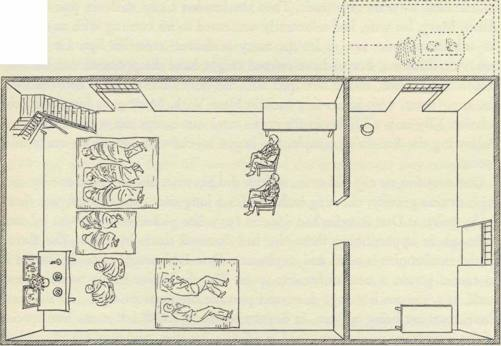
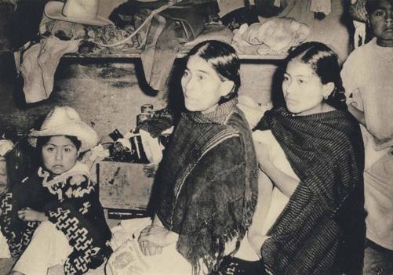
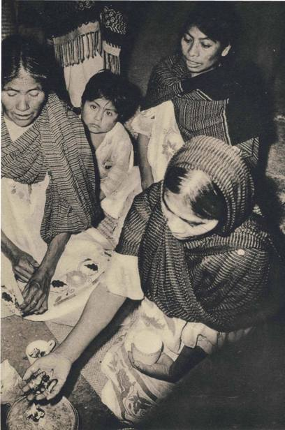
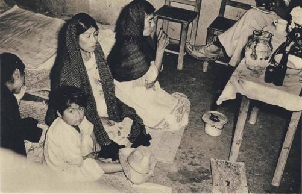
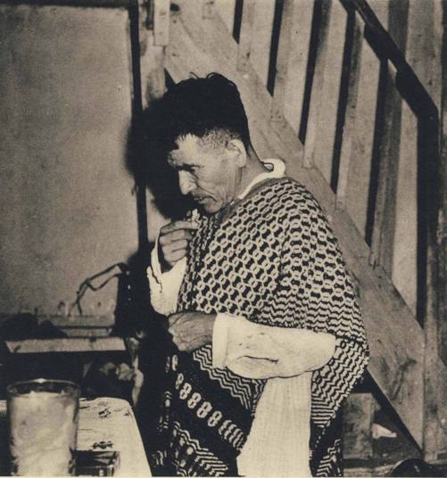
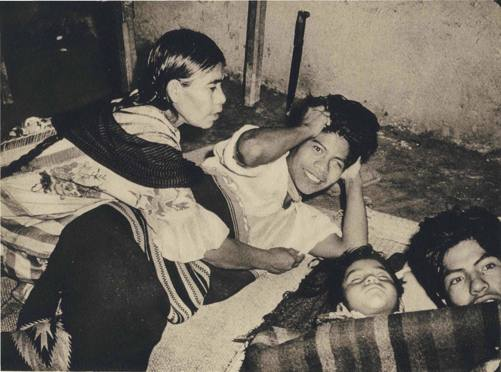
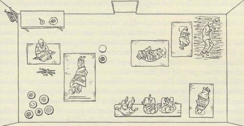

VS/ith the concluding words of the previous section we had thought to end our
discussion of the divine mushrooms. But in 1955 we returned again to Mexico
to push our inquiries, and, at last breaking through the barrier of native shyness,
we penetrated into the mushroom cult much more deeply than before, eating
the mushrooms ourselves as participants in a communal agape. We experienced
subjectively for the first time what we had previously been able to describe only
as witnesses from the outside or at second hand by the testimony of informants.
Just as our book goes to press we add the following notes on our 1955 adventures.
On Friday, June 24, VPW, Masha, and RGW flew to Mexico City. We in-
stalled ourselves in a small villa in San Angel, at Reyna 9, which we had rented
with servants as a base for our excursions. Thither we could return and relax in
the quiet of a lovely garden, the high walls festooned with blooming bougain-
villea, after our sorties into the Indian country. Two days later Allan Richardson
joined us, to serve again as our photographer, and on Monday he and RGW set
out for the heart of the Mazatec country. By Tuesday night we were bedded
down with a Mazatec family in one of the villages of that remote world in
northern Oaxaca. On this trip Robert Weitlaner was prevented by other duties
from accompanying us, and we therefore considered ourselves doubly fortunate
when almost at once, in a new circle of Indians, we found ourselves received
as friends.
We shall call our host Cayetano and his wife Guadalupe. Intelligent, vigorous,
and gentle, this couple, in their thirties, were the key to the success of our ex-
pedition. As soon as RGW imparted to them in confidence his interest in the
sacred mushrooms, they pledged their cooperation, and they more than made
good their pledge.
Cayetano and Guadalupe's house is on the outskirts of Huautla de Jimenez
and opens directly on the village thoroughfare that runs along a mountain-
side. With roof of thatch and adobe walls, it has two storeys. You enter on the
upper level from the street, and then by a small trap-door in one corner you
climb down a steep and twisting stairway to the floor below, where the events
that we shall relate took place. This lower storey is built on one side against the
mountain face, and on the other side by a door it opens on a terrace perhaps six
feet wide, which then falls sharply away to the ravine hundreds of feet below.
287
Across the valley and beyond, the Sierra Mazateca in all its verdant glory fills
the distant view. On the terrace at one end of the house a flimsy wooden and
thatch annex has been constructed to serve as kitchen. The interior is divided
by a whitewashed adobe wall into two rooms. There is no window in either
room, but over the door on the terrace an aperture allows in some light. This
room was well sheltered from the life of the village, and doubly so at night when
Mazatec villagers refrain from stirring abroad. The family circle was large:
our hosts' small children were numerous, and Cayetano's brothers and parents
were also much in evidence, as well as other kin. Chickens and turkeys had the
run of the lower floor. A hen sitting on her eggs on one of the cluttered tables
was a silent witness to all that went on.
On the day after our arrival, early in the afternoon of Wednesday June 29,
Cayetano and his brother Genaro took us down the mountain side to the edge
of the stream in the gully. In the lower reaches of our descent we skirted a field
planted to sugar cane, and then arrived at the spot where it is the custom to mill
the cane, a flat space the size of a threshing floor, thick with rotting bagasse, as
the refuse from the mill is called. There in the bagasse, just as Cayetano had
promised, we found an immense crop of mushrooms, of the sacred kind known
to our Mazatec friends as ki3so\ 'landslide'. We photographed them to our
hearts' content. We gathered them in a pasteboard box: the sacred mushrooms
must always be carried in a closed parcel, never exposed to the view of passers-by.
They were a noble lot, mostly young, all of them perfect in their moist health
and fragrance. Then we carried them up the steep mountain side to the house.
We were warned that if we saw any dead animal on the way, the mushrooms
would lose their virtue — happily we saw none. It was in the rainy season, and
in the humid heat of that sunny afternoon the climb was long and exhausting.
Hardly had we arrived back when Cayetano sent us, with his brother Emilio
as interpreter, to a cottage some distance farther up, where he said we would
find a curandera de primera categoria, a cumndera of the first class, Maria Sabina by
name. We were to ask her whether she would help us that night. We found
the Seiiora, as our hosts always called her, resting on a petate, or mat made of a
certain palm. She was alone with a daughter who was up and about. After
introducing ourselves through Emilio, we showed them our mushrooms, where-
upon the two women went into raptures over their fine condition and beauty.
We put our question to the Senora, and without hesitation, looking steadily at
us, she said yes. Neither she nor her daughter spoke a word of Spanish. We do
not know whether they had been told to expect our visit.
Maria Sabina is a woman in her fifties, grave in demeanor, with a grave smile,
288
THE MUSHROOM AGAPE
short of stature like all Mazatecs, dressed in the Mazatec huipil. Her daughter is
in her thirties and in all respects takes after her mother. She is following her
mother's vocation. The Senora herself is at the peak of her powers, and it is
easy to see why Guadalupe had said to us of her that she was una Senora sin
mancha, a lady without blemish, immaculate, one who had never dishonored her
calling by using her powers for evil. She alone, said Guadalupe, had brought
the latter's children through all the diseases that take a frightful toll in early
childhood in the Mazatec country. After that initial talk we were to pass two
all-night vigils with Dona Maria and her daughter, and we can testify that she
is a woman of rare moral and spiritual power, dedicated in her vocation, an
artist in her mastery of the techniques of her office. It was her example that
drove home for us for the first time a rule that must govern all field anthro-
pologists. In the archaic cultures as among advanced peoples, there is a hierarchy
of excellence when it comes to the individuals who are the culture-bearers. It
is not sufficient to rely on the first informants that present themselves, on any
shaman who is willing to talk. The whole cultural area must be discreetly sur-
veyed and communication must be established with the finest exponents of the
old traditions. None of the formidable difficulties of physical existence in
these remote regions nor of communication should be permitted to blunt this
obligation.
On that last Wednesday of June, after nightfall, we gathered in the lower
chamber of Cayetano's house. In all, at one time or another, there must have
been twenty-five persons present, mostly members old and young of Cayetano's
family. The Senora came with her daughter Polonia. They and all the others
were pleased when we photographed them, and we took numerous pictures
throughout the preliminaries. But the Senora requested through Cayetano
that when the power would seize her — cuando la fuerza le aganara — we
should desist, and of course we did so. Cayetano served us chocolate to drink,
somewhat ceremonially. (RGW's thoughts went back to Sahagiin in the l6th
century, who had said that chocolate was served before the mushrooms were
taken. Cayetano also offered us coffee and sweet wheaten bread, neither of which
had been known to his ancestors in pre-Conquest Mexico.) Both Allan Richard-
son and RGW were deeply impressed by the mood of the gathering. We were
received and the night's events unrolled in an atmosphere of simple friendliness
that reminded us of the agape of early Christian times. There was no familiarity.
The mushrooms were treated respectfully, as sacred, but without marked for-
mality. The proceedings went forward with an easy decorum. Neither on this
occasion nor at any other time or place did we ever see or hear the mushrooms
289
treated as a subject for jocular vulgarity, of the kind that often marks the use of
alcohol among fully civilized peoples. The atmosphere of respectful friendliness
was infectious, and we enjoyed reciprocating the welcome extended to us. There
is no record that any white men had ever attended a session of the kind that we
are going to describe, nor that white men had ever partaken of the sacred mush-
rooms under any circumstances. For reasons deeply rooted in the mortal cul-
tural conflict of Spaniards and Indians, it is unlikely that any unrecorded event
of the kind had ever taken place. By hearsay the early Spanish writers had re-
ported gatherings of Indians where the mushrooms were served to many, but
we had thought from our previous visits to Mexico that such observances were
today unknown. We were now to learn that they still go on, and that they are
even today a central experience in the culture of the Mazatec people. The only
change is that the gatherings now are held behind closed doors. Cayetano told
us early in the evening that no one on any account should leave the house
before break of day, and for the necessities of nature he showed us the rudiment-
ary provision that had been made in one corner of the other room. The contempt
of the Spaniards for indigenous rites and the Church's condemnation of them
as idolatrous heresies have not killed these assemblies of ancient lineage, but have
driven them under cover.1 Our hosts were obviously pleased by our intense and
sympathetic interest in all that went on before our eyes. The very fact of our
participation must have made the evening memorable for them. They were
dressed up for the occasion. Genaro in particular was resplendent in his handsome
striped sarape and his freshly washed white cotton trousers or bags, which
Indian-style were buttonless, being supported by strings tied around the waist.
By our respectful behavior we did all we could to make clear that for us the
rite we were witnessing possessed full religious stature. We were mindful of the
drama of our situation. We were attending as participants a mushroomic Supper
of unique anthropological interest, which was being held pursuant to a tradition
of unfathomed age, possibly going back to the time when the remote ancestors
of our hosts were living in Asia, back perhaps to the very dawn of man's cultural
history, when he was discovering the idea of God.
There were a few home-made wooden chairs in the room, and in the beginning
Allan and RGW used them. Cayetano's brother Genaro and possibly one other
I. Dr. Harold Alexander Abramson of New York, a specialist in psychotic research who has studied the action
of lysergic acid diethylamide and other hallucinogens, believes that persecution was certainly not the only
reason for holding the mushroomic agape behind closed doors. He is sure that the participants, if released from
the centripedal influences of the intimate circle, would sometimes behave in extreme ways, even killing them-
selves or murdering others or engaging in assaults. When he expressed this view, Dr. Abramson knew nothing
of the 16th century accounts of those very excesses perpetrated by persons who, having eaten the mushrooms,
went out on the town.
2 9 0

THE MUSHROOM AGAPE
remained seated on chairs the whole night through. The others lay or reclined
on mats on the floor, wrapped in sarapes, except of course for the Sefiora and
her daughter, who, wearing clean huipiles with identical reddish-yellow birds
embroidered on them in front, sat before the altar-table on mats. They sat with
what seemed a half-studied formality, the daughter a little behind her mother and
slightly to her mother's right. Later, in the dark, we could barely discern their
Fig. 21
triangular shadows as first one and then the other lifted her voice in song. It was
then, when the details were erased by night and only the geometric mass per-
sisted, that they suddenly reminded RGW of the pyramids that are the outstand-
ing feature of architecture in pre-Conquest Mexico. Could the pyramids have
been originally a geometric stylization of the worshipping Indian seated on his
mat, of the gods that were his magnified projection of himself?
At about 10.30 o'clock the Sefiora and her daughter took their positions before
the small table that served for an altar. On it were two holy pictures, on the left
the child Jesus and on the right the Baptism in Jordan, with a bouquet in front
of them, a crucifix hidden in the flowers, three lighted candles of virgin bees-
wax, and a lighted wick in a glass of wax. There were also two pottery bowls
and some cups. The Senora then went through our box of mushrooms, brush-
291
ing off with her fingers the grosser pieces of dirt and passing them in her hand
over copal that was burning on a metal lid on the floor. Into each of the two
bowls she put 13 pair of mushrooms; one bowl was for her and the other
for her daughter. Into each cup she put four pair, or five, or six, and then handed
the cups to the grown-ups that were to take them. The children received none,
and we were told that she never gave mushrooms to children. To RGW she
handed a cup with six pair. Our readers will imagine his joy at this dramatic
culmination to years of pursuit. Then she handed a cup with six pair to poor
Allan. Mary, his wife, had reluctantly consented to his coming with us only on
his solemn promise not to let the nasty toadstools cross his lips. He faced a
behavior dilemma, but to have refused might have disappointed our friendly
Indian companions, and so he coped with the immediate problem first and took
the cup. (Later, with him safely back in New York, Mary gave him ready ab-
solution.) By now all lights in the room were out except the wick in the glass.
Following the Seiiora's example, we began to chew and swallow our mush-
rooms.
Our curandera ate cap and stem, and we did likewise. She ate them one by one,
with utmost gravity, chewing each one for a long time. She did not pick them
up by pairs, as Don Aurelio had done in 1953. She picked them up one by one,
although in apportioning them she had counted them by pairs. The flavor
of the mushrooms is acrid and unpleasant. Don Roberto afterwards likened it
to rancid grease, a taste unfamiliar to us. The distinctive flavor would repeat
itself, as a gaseous beverage does, and pervade the nasal passages. (At the time
these notes are being written, in September 1955, RGW has eaten five species
of the divinatory mushrooms used in Middle America, and they are all marked
by this singular and unforgettable taste and after-taste, which seem to be the
veritable signature of the divine species.)
We all ate our mushrooms facing the wall where the small altar table stood.
We ate them in silence, except for Cayetano's father, Don Emilio, who was
consulting the mushrooms about his infected left-forearm. He would jerk his
head violently with each mushroom that he swallowed, and utter a smacking
noise, as though in acknowledgement of their divine potency. The Senora had
asked us to take care not to invade the corner of the room on the left of the altar
table, for down that corner would descend the Holy Ghost. We sat near-by,
taking about a half hour to eat our six pair of mushrooms. By 10.40 o'clock
we had all finished our respective portions, the Sefiora crossing herself with the
last swallow. Then we waited in silence. After about twenty minutes the Senora
plucked a flower from the bouquet and with it put out the last of the velas. We
292
THE MUSHROOM AGAPE
should have been in Stygian darkness, but by good fortune the night was clear
and a gibbous moon, by the opening above the door, gave us just enough light
to make our darkness visible.
At about 11.20 o'clock Allan leaned from his chair and whispered to RGW
that he was having a chill. We wrapped him in a blanket. A little later he leaned
over again and said, 'Gordon, I am beginning to see things,' to which RGW
gave him the comforting reply that he was too. Allan lay down along the wall
on the large petate that had been spread for us, and shortly afterwards RGW
joined him.
Except for the children who had eaten no mushrooms, no one slept that night
until about 4 o'clock in the morning. (The last entry in RGW's notebook carries
the hour 3.50.) There was no inclination to sleep. At all times we were alert both
to our subjective hallucinations and to the goings-on around us in the dark.
RGW took imperfect notes intermittently and kept track of the hours. But he
and Allan were both alive to the fact that they were not themselves. Though
RGW had resolved to fight off any effects of the mushrooms and remain the
detached observer, the mushrooms took full and sweeping possession of him.
There is no better way to describe the sensation than to say that it was as though
his very soul had been scooped out of his body and translated to a point floating
in space, leaving behind the husk of clay, his body. 'Landslide', the designation
of the Mazatecs for the mushroom we were using, had seemed to him a clumsy
name before; now its awesome truth imposed itself. Our bodies lay there while
our souls soared. We both felt nauseated; RGW twice made his way to the other
room to vomit, and Allan three times. One or two others, not identified in the
darkness, did likewise. But these episodes seemed of no moment. For we were
both seeing visions, similar but not identical visions, and we were comparing
notes in whispered interchanges. At first we saw geometric patterns, angular not
circular, in richest colors, such as might adorn textiles or carpets. Then the
patterns grew into architectural structures, with colonnades and architraves,
patios of regal splendor, the stone-work all in brilliant colors, gold and onyx and
ebony, all most harmoniously and ingeniously contrived, in richest magnifi-
cence extending beyond the reach of sight, in vistas measureless to man. For some
reason these architectural visions seemed oriental, though at every stage RGW
pointed out to himself that they could not be identified with any specific oriental
country. They were neither Japanese nor Chinese nor Indian nor Moslem. They
seemed to belong rather to the imaginary architecture described by the visionaries
of the Bible. In the aesthetics of this discovered world attic simplicity had no
place: everything was resplendently rich.
293
At one point in the faint moonlight the bouquet on the table assumed the
dimensions and shape of an imperial conveyance, a triumphal car, drawn by
living creatures known only to mythology. With our eyes wide open, the visions
came in endless succession, each growing out of the preceding one. We had the
sensation that the walls of our humble house had vanished, that our untrammeled
souls were floating in the universe, stroked by divine breezes, possessed of a
divine mobility that would transport us anywhere on the wings of a thought.
Now it was clear why Don Aurelio in 1953 and others too had told us that the
mushrooms would take you ahi donde Dios estd — there where God is. Only
when RGW by an act of conscious effort touched the wall of Cayetano's house,
would he be brought back to the confines of the room where we all were,
and this touch with reality seemed to be what precipitated nausea in him.
On that night of June 29-30 we saw no human beings in our visions. On the
night of July 2-3 RGW again took mushrooms in the same room, with the
Senora again serving as votary. If we may anticipate our story, on that second
occasion RGW's visions were different. There were no geometrical patterns,
no edifices of oriental splendor. The patterns were replaced by artistic motifs of
the Elizabethan and Jacobean periods in England - armor worn for fashionable
display, family escutcheons, the carvings of choir stalls and cathedral chairs.
No patina of age hung on them. They were all fresh from God's work-shop,
pristine in their finish. The beholder could only sigh after the skill that would
have fixed those beauteous shapes on paper or in metal or wood, that they might
not be lost in a vision. They too grew one out of the other, the new one emerging
from the center of its predecessor. Here as in the first night the visions seemed
freighted with significance. They seemed the very archetypes of beautiful form
and color. We felt ourselves in the presence of the Ideas that Plato had talked
about. In saying this let not the reader think that we are indulging in rhetoric,
straining to command his attention by an extravagant figure of speech. For the
world our visions were and must remain 'hallucinations'. But for us they were
not false or shadowy suggestions of real things, figments of an unhinged imagin-
ation. What we were seeing was, we knew, the only reality, of which the
counterparts of every day are mere imperfect adumbrations. At the time we
ourselves were alive to the novelty of this our discovery, and astonished by it.
Whatever their provenience, the blunt and startling fact is that our visions were
sensed more clearly, were superior in all their attributes, were more authoritative,
for us who were experiencing them, than what passes for mundane reality.
Following the visions that we have already described, on both occasions
RGW saw landscapes. On Wednesday they were of a vast desert seen from
294

PLATE XLVI. Maria Sabina and her daughter Polonia, curanderas.
Huautla de Jimenez, June 29, 1955.

PLATE XLvn. Maria Sabina, curandera, passing mushrooms over incense (copal);
also her daughter Polonia and Cayetano's mother.
Huautla de Jimenez, June 29-30, 1955.

PLATE XLVIII. Adoration of the mushroom. Maria Sabina, curandera, and her daughter Polonia.
Huautla de Jimenez, June 29-30, 1955.

PLATE XLIX. Emilio Garcia taking Teo-nandcatl or 'God's Flesh'.
Huautla de Jimenez, June 29, 1955.
THE MUSHROOM AGAPE
afar, with lofty mountains beyond, terrace above terrace. Camel caravans were
advancing across the mountain slopes. On Saturday the landscapes were of the
estuaries of immense rivers brimming over with pellucid water, broad sheets
of water overflowing into the reeds that stretched equally far from the shore line.
Here the colors were in pastel shades. The light was good but soft as from a
horizontal sun. On both nights the landscapes responded to the command of the
beholder: when a detail interested him, the landscape approached with the speed
of light and the detail was made manifest. There seemed to be no birds and no
human life in the river estuary, until a rude cabin suddenly appeared with a
woman motionless nearby. She was a woman by her figure and face and costume,
and of course the vision was in color. But she was a statue in that she stood
there without expression, doing nothing, staring into the distance. She might
be compared to those archaic Greek sculptures where the woman gazes into
space, or, better yet, the departing woman on the Greek funerary stele who
looks into eternity, except that our vision was of a living woman whereas the
Greek sculptures, marble white, are mere imitations in stone of what we were
seeing.
On both nights RGW stood up for a long time in Cayetano's room, at the
foot of the stairway, holding on to the rail, transfixed in ecstasy by the visions
that he was seeing in the darkness with his open eyes. For the first time that word
'ecstasy' took on subjective meaning for him. 'Ecstasy' was not someone else's
state of mind. It was no longer a trite superlative cheapened by overuse. It
signified something different and superior in kind, about which RGW could
now testify as a competent witness. There came one moment when it seemed
as though the visions themselves were about to be transcended, and dark gates
reaching upward beyond sight were about to part, and we were to find our-
selves in the presence of the Ultimate. We seemed to be flying at the dark gates
as a swallow at a dazzling lighthouse, and the gates were to part and admit us.
But they did not open, and with a thud we fell back, gasping. We felt disap-
pointed, but also frightened and half relieved, that we had not entered into the
presence of the Ineffable, whence, it seemed to us at the time, we might not have
returned, for we had sensed that a willing extinction in the divine radiance had
been awaiting us.
We know not what manner of visions is induced by opium or hashish or coca
or mescalin, nor whether the agent in our mushrooms that releases the visions
is related to the agents in them. Later in the Zapotec country, the curandero
Aristeo Matias told us that it takes three or four experiences with mushrooms
to overcome the initial surprise and the disorder that marks the sequence of
295
visions on the first occasions. (Here was fatherly advice from an old hand to us
who had told him that we aspired to enter upon his vocation.) This would suggest
that there is or at least can be a growth, an evolution, in the hallucinatory
experiences induced by the mushrooms.
Throughout the night we were strangely split in the very core of our being.
On one level space was annihilated for us and we were traveling as fast as thought
to our visionary worlds. On another level we were lying there on our petates,
trying to take notes, RGW and Allan exchanging whispered comments, alive
to every twitch and twinge in our heavy (oh so heavy!) earth-bound bodies of
clay. At the same time we were both held in thrall by what was going on in the
room around us. For the Senora and her daughter were engaged all night in a
religious performance that we had not expected and that no one had ever de-
scribed to us.
Before we go further we must mention that when we had bespoken the
Senora's services in the afternoon, she had asked us what problem was troubling
us. Once again RGW trotted out the question of his son Peter, now in the army.
How was he? Alive or dead, or ill, or in good spirits, or in some trouble;
This had seemed to her a sufficient justification. We had counted on Cayetano to
stay with us through the night as our guide and interpreter. We observed that
neither he nor Guadalupe were taking the mushrooms. As we were finishing
ours, Cayetano informed us that he and his wife were withdrawing up the
stairs and through the trap-door to the room above, where they would guard
us against interruptions from the street. He was leaving his brother Emilio to
act as our mentor. We sensed that each of the other adults who were taking the
mushrooms was consulting them, as we were, about individual problems.
After the Senora had put out the last vela, a silence of perhaps twenty minutes
followed. The moon was shining brightly outside, and its orbit was such that the
shaft of moonlight entering above the door fell squarely on the altar-table, but
it did little to relieve the general darkness in the room. Suddenly the Senora began
to moan, low at first, then louder. There were silent pauses, and then renewed
humming. Then the humming stopped and she began to articulate isolated syl-
lables, each syllable consisting of a consonant followed by a vowel, sharply pro-
nounced. The syllables came snapping out in rapid succession, cutting the dark-
ness like a knife, spoken, not shouted. After a time the syllables coalesced into
what we took for words, and the Senora began to chant. The chanting continued
intermittently all night, first by the Senora and then by her daughter, and
afterwards alternately by one or the other. The chanting was in Mazatec, and
there was no one to translate the words for us. Neither Allan nor RGW is
296
THE MUSHROOM AGAPE
instructed musicologically, and we cannot say whether the provenience of the
music was European or indigenous. That the chanting was in Mazatec, and not
in Latin or Spanish learned by rote, adds point to this question. (If the chants
are old, the language may be archaic, which would be a discovery of high interest
for the handful of first-rate scholars who have devoted themselves to Mazatec
linguistics.) Both women chanted in that distinctive way which seems always to
mark the intoning of age-old chants; the singing was soaked in weary melan-
choly. Our Senora's voice was not loud, probably not loud enough to be heard
in the village thoroughfare. But there was a confidence and resonance in her
primitive utterance that imposed itself. There came a moment late in the night
when the Sefiora made her way to the door on the terrace and went outside,
holding her hand on the door. (To this extent she was free of the prohibition
laid on the rest of us not to leave the house.) When she re-entered, she left the
door slightly ajar, and we saw her advance on her knees across the open space in
the room, and then turn to the right toward the altar-table. Her hands were up-
lifted to shoulder-level, palms exposed. As she slowly progressed, she sang a
canticle that seemed like an introit, indescribably tender and plaintive in its
musical phrases. Her daughter sang well too, but lacked her authority. From
time to time, as they sang, the men who had taken the mushrooms, notably
Genaro and young Emilio, ejaculated words, groans, short sentences, and vocal
noises. We know not "what they said, but they seemed to intervene with their
voices to suit the singing, in such a way as to produce a strange, barbaric har-
mony.
The singing was not continuous. For stretches the Senora would talk, as though
invoking the Spirits or as though the Holy Ghost was speaking through the
mushrooms. We heard the names of Christ (which she pronounced with an
intrusive V, Khristros), of St. Peter and St. Paul. We heard her cry out 'Pedro'
repeatedly in an imploring tone, and knew that the mushrooms were wrestling
with the problem of Peter. Emilio made his way to us and whispered that Peter
was alive and well, and contrite for not having let us hear from him. We asked
for further details, but Emilio said that since we ourselves had eaten the mush-
rooms, we could expect them to speak to us directly. Our interpreter Emilio
then vanished into the darkness for the rest of the night.
Unlike the chants, the spoken utterances were fresh and vibrant and rich in
expressiveness. The mushrooms were talking to the point. We had never sus-
pected how sensitive and poetic an instrument the Mazatec language could be.
The intermittent snatches of the Senora's monologue seemed quick with subtle
feeling, laden with dramatic import. In our very presence a priestess of the old
297
religion was pronouncing oracular dictates in spurts, hot and firm with authority.
How we regretted that we had no means to record her voice! (At the time we
asked ourselves, and we have repeated the question often since then, whether
our critical faculties were deranged by the effects of the mushrooms, so that
we over-rated the quality of the Senora's performance. Perhaps so. But if this
is an aberration typical of the syndrome of mushroomic ecstasy, our account
at least serves to document it for the record, and to establish that our halluci-
nations were auditory as well as visual.)
The chanting and the oracular utterances turned out to be only a part of what
we were to witness. At an early stage we sensed that the Senora was either kneel-
ing or standing before the altar-table gesticulating with her arms. We detected
this by ear and confirmed it uncertainly with the aid of the meager moonlight.
Then, much later in the night when her daughter took over the chanting, the
Senora made her way to the open space between us and the door, and she em-
barked on a kind of dance that must have lasted for two hours or more. We do
not know precisely what she did, because of the darkness, but she was between
us and the aperture above the door, and we could just make out that she
was turning clock-wise, facing in succession each of the four compass points,
at the same time raising and lowering her arms. Her daughter was singing, but
she was not silent. She was engaged in a lengthy, rhythmic percussive utterance
of a kind unfamiliar to us. There was a differentiation in the pitch of the beats,
and at times the pattern or phrases seemed to us complex. We cannot say for
sure how she made her sounds, but we are almost sure that she clapped her hands,
slapped her knees, smacked her forehead, and whammed her chest. We were
impressed by the cleanness of the utterance. Every clap or slap or smack or wham
was resonant. Remembering the role played by pitch in the Mazatec language,
we asked ourselves whether the Seiiora was speaking percussively. On each of
our two nights with her, she rinsed her mouth once with water, and the garg-
ling was also rhythmic, and perhaps tonally differentiated. Then she would spit
out the water on the ground unrhythmically. On Saturday night, in a moment
of illumination by flashlight, we saw and heard her twicking her long finger
nails rhythmically. A remarkable feature of her percussive utterance on Wed-
nesday night was its ventriloquistic property. For a long stretch we were in the
blackest darkness while the daughter sang and the Senora was performing her
strange dance with percussive accompaniment. As she would snap out her re-
sonant claps and smacks, we seemed to catch them out of the night from various
directions. Let the reader remember that all the while we were seeing our visions
and attending to the auditory sensations served to us by the two women. There
298
THE MUSHROOM AGAPE
we were, visually suspended in space before the vast panorama of, say, the Gobi
Desert, with a singing accompaniment and with percussive cracks assailing us,
now from above, now here, now there, exactly like Hamlet's ghost hie et
ubique, hitting us with a cutting crispness from unpredictable quarters, as though
an air-borne choir of invisible creatures was peopling the dark void around
us, perplexing us with their assorted and shifting cries. Possibly this ventri-
loquistic effect was caused by the Senora's turning in different directions as she
performed, so that the sound caromed to us from the ceiling or walls. And all
the while there was the irregular chorus, subdued in volume, of ecstatic ex-
clamations from the Indians reclining on the ground. Confined though we were
in a room without windows or open door, at one point we felt a swish of air,
just as though we were really suspended in the great outdoors. Was this too an
hallucination? If so, all shared it, for when the wind blew on us, there was general
excitement, flashlights were switched on, and our Indian friends were sitting up,
amazed at being stroked by the Divine Afflatus.
At one point in the night RGW made a discovery. In the light of a cigarette
that someone was inhaling, he saw the Seiiora, who was performing her dance,
lift a small bottle to her lips. From her posture the bottle seemed almost empty.
A few minutes later she began to thump the butt end of the bottle on the petate.
She did this with a fast, uniform, perfect beat, perhaps a hundred to the minute,
and she kept at it for an eternity, minutes on end, until Allan and RGW could
hardly stand it any longer and groaned in agony. The iterated thump, somewhat
resonant, became excruciatingly painful, a torture such as Poe might have
described. After the night had passed and we were all getting up, RGW made
a point to find the bottle and smell it. There could be no doubt: it was the
familiar six-ounce bottle of aguardiente, a distillate of cane. Presumably the
Sefiora had shared it with her daughter, but of this we are not sure. We asked
Cayetano about it. Yes, invariably the person who retains the Seiiora is expected
to present her in advance with a cuarto (fourth of a litre) of this strong drink. We
in our ignorance had neglected our duty, but Cayetano had come to our rescue.
Recalling as we did how Don Aurelio and our friends in the Mije country had
all said that alcohol was tabu before, during, and after the consumption of the
mushrooms, we are still at a loss how to reconcile the conflicting evidence.
But of course the Senora's performance from first to last had differed from what
Don Aurelio had shown us in 1953. We had now attended two all-night vigils,
both using the sacred mushrooms, but otherwise utterly different from each
other. Don Aurelio's divinatory liturgy, with the elaborate role in it of ac-
cessories, could conceivably go on without mushrooms, but in Cayetano's
299
house the mushrooms were the key to everything. We spoke to Cayetano about
that other performance that we had seen in the Mazatec country in 1953. He
knew all about that kind too, and he told us that the Senora was equally pro-
ficient in both ceremonies. We failed to learn, however, when one method is
used in preference to the other.
At intervals throughout the night, perhaps every forty minutes or so, there
would be what we can only describe as intermissions. After working up to a
powerful climax in utterance, the Senora and her daughter would subside into
silence. We recall one such climax when the Senora, half-singing, half declaim-
ing, spat forth in endless repetition and with barbaric violence the two syllables
chung-ha (the first element riming, not with 'sung', but with the Chinese 'Sung');
we were never able to learn what this meant. After such climaxes our two vo-
taries and our reclining Indian friends would light cigarettes (ordinary ones) and
smoke and engage in the most animated conversation. Clearly they were
discussing what was happening, but we had no interpreter. They would light
the electric torches. We took advantage of these moments to study the Senora.
She was not in a trance. That is to say, she was one of us, talking and smoking.
But she was in a state of excitement, her eyes flashing, her smile no longer that
grave smile which we had observed before, but now quick with animation and,
if we may use the word, carltas. For there is another aspect to the mushrooms
that we must mention. The spirit of an agape of which we have already spoken
was a prelude to a wave of generous or tender feelings that the mushrooms
aroused in everyone. To illustrate this, we recall how, when nausea first sent one
of us into the adjoining room to vomit, the Senora, who had been in full song,
immediately stopped the performance, and she and the others manifested the
most embarrassing solicitude about the unhappy episode, which after all was
wholly unimportant. On the two nights that we passed in Cayetano's house, we
were aware of no erotic stimulation among those present and we think there
was none. But the feeling of brotherly affection was strong indeed. Twice in the
course of that first night the Senora reached out her right hand to RGW and
sought contact with his fingers in friendly greeting, across the chasm of the
language barrier. The Indians of Middle America are known for their reticence
in the display of affection, even within the family circle. It was now clear that
the mushrooms emancipate them from inhibitions of this kind, and what we
witnessed on Wednesday night was abundantly confirmed during our second
session on Saturday, July 2.
After the first performance Allan and RGW, quite stunned and even numbed
by what we had witnessed, were disposed to say, 'Never again'. But by Saturday
300

PLATE L. Maria Sabina, curandera, and her son Aurelio under the influence of mushrooms.
Huautla de Jimenez, June 29, 1955.
THE MUSHROOM AGAPE
morning there were many questions that we needed to clarify, and so through
Cayetano we asked the Sefiora if she would give us a repetition. This she agreed
to do. We pled with her to let us take a few photographs by flashlight while the
power was on her. She said yes, and in the course of that night from Saturday
to Sunday Allan took perhaps twenty pictures in the darkness, guessing of
necessity as to the distance and direction. (It was raining in torrents all that night,
and so there was no moon.) But the Senora's behavior differed much from what
we had seen the first time. Everything was reduced in scale. There was no danc-
ing and virtually no percussive utterance. Only three or four other Indians were
with us, and the Sefiora brought with her, not her daughter, but her son Aurelio,
a youth in his late teens who seemed to us in some way ill or defective. He and
not we were the object of her attention. All night long her singing and her words
were directed to this boy. Her performance was the dramatic expression of a
mother's love for her child, a lyric to mother-love, and interpreted in this way
it was profoundly moving. The tenderness in her voice as she sang and spoke, and
in her gestures as she leaned over Aurelio to caress him, moved us profoundly.
As strangers we should have been embarrassed, had we not seen in this curandera
possessed of the mushrooms a symbol of eternal motherhood, rather than the
anguished cry of an individual parent. But by any interpretation this untram-
meled and beautiful outpouring, touched off in all likelihood by the sacred
mushrooms, was behavior of a kind that few Middle American anthropologists
would ever expect to see.
On this second occasion Allan took no mushrooms, for the sake of his photo-
graphy. The Sefiora asked RGW how many pair he would take, which he
interpreted as a compliment to his status as one already initiated, and he said
five. The effect seemed as strong as he had experienced from the larger dose on
Wednesday, but this time there was no nausea.
Both of our nights with the Sefiora drew to a close in the same way. On the
night of Wednesday-Thursday, our last notes seem to have been scribbled a few
minutes before 4 a.m., and soon afterwards we slipped off imperceptibly into a
dreamless slumber. Apparently everyone else did likewise. At any rate, at about
6 o'clock we woke up, our heads clear. Some of the others were already stirring,
and in a few minutes everyone was on his feet. RGW changed the roll in his
camera and resumed picture-taking, as did Allan. Cayetano and Guadalupe
asked after our welfare but were discreet in their inquiries about the night's
doings. They served us coffee and bread. By 7 o'clock we were ready to sally
forth into the world. We felt no untoward sleepiness that day.
Perhaps in some respects we can define better than we have done the psychic
301
disturbance caused by the sacred mushrooms. On the one hand, they unhinge
one's sense of time. Visions that seem to last an aeon run their course in a minute
or so. Only by reference to a time-piece does one keep track of the passing hours.
On the other hand, the faculty of memory is heightened by the mushrooms.
All the impressions, visual and auditory, are graved as with a burin in the tablet
of the memory. Our narrative of what took place has been checked with the
notes that we jotted down at the time, but our memory is far richer and fuller
than those notes.
What can we say about the source of our visions ; Did they bubble up out of
our own past ; We have no conscious memory of having viewed previously the
scenes that we saw. There was nothing in them that repeated themes familiar to
us in our adult experience, no modern highways, cars, cities. Yet all that we saw
could be related to themes latent in our imagination, not necessarily things seen,
nor even things seen in graphic representation, but those things transmuted
afterwards in the imagination, imagined from reading, seen in the mind's eye.
All of the visions had that pristine quality which we associate most often with
the magic of supreme literary expression, especially great poetry. In the lives of
us all, even those who are most earth-bound, there are moments when things,
even the most humdrum, suddenly and unaccountably clothe themselves with
beauty, haunting and ravishing beauty. It now seems to us that all such flashes
must emerge from the subconscious well where our visions have all this time
been stored, for the mushroomic visions are an endless sequence of those flashes.
There are those like Keats who have possessed the power to see such visions in
abundance without the mushroomic stimulus. Could the mushrooms have done
better by Keats than he did without them; What would they have shown him
that he did not see; What precisely do our Indian friends see, with their dif-
ferent background; Clearly the visions come from within the beholder, either
from his own unconscious or, as some will surely think, from an inherited fund
of memories of the race. What an amazing thing that we should all be carrying
this inventory of wonders around with us, ready to be tripped into our conscious
world by mushrooms! Are the Indians far wrong in calling these divine; We
suspect that, in its fullest sense, the creative faculty, whether in the humanities or
science or industry, that most precious of man's distinctive possessions and the
one most clearly partaking of the divine, is linked in some way with the area of
the mind that the mushrooms unlock.
We believe that the mushrooms are not habit forming. If we are right, they
differ in this respect, not only from alcohol, but from the drugs such as opium
and marihuana that are reputed to stimulate beatific visions. In the course of
302
THE MUSHROOM AGAPE
our three expeditions to Mexico, covering four cultural areas, we never heard
of a mushroom addict. We believe that use of the mushrooms does not affect the
threshold of tolerance for them; that is to say, one does not raise the dose on
successive occasions to obtain the same effect, either for the short run as when
we used them twice in four days, or over the long term. Our Sefiora and her
daughter took more than twice the dose of the others, but this quota goes with
their vocation. Everyone's dose seems to remain constant throughout life,
though the dose varies somewhat from person to person. We have seen no
evidence that the mushrooms can cause harmful psychic effects but our ex-
perience is too limited for us to generalise about this. Are persons with neurotic
or psychotic inclinations endangered by the mushrooms? After a life-time of
use do mushroom-eating curanderos show mental deterioration; May there be
individuals whose mushroomic visions are horrifying and who are stimulated
to violence by them; We do not know. In considering the clinical effects of
the mushrooms, let us not overlook the extraordinary performance of the
Sefiora and her daughter. They had each eaten more than twice as many pair of
mushrooms as the rest of us, and they not only kept hold of themselves: they
staged a liturgy that called for disciplined virtuosity of a high order.
On Friday, July i, VPW and Masha joined us in our village. We had all
planned to leave immediately after the Saturday night experience, but the rains
came and we found ourselves marooned among our Mazatec friends for most
of the following week. On Tuesday the 5th VPW and Masha, having nothing
else to do, took the mushrooms in the afternoon, VPW five pair and Masha four,
and then they lay down in their sleeping bags. This was the first occasion on
which white people ate the mushrooms for purely experimental purposes,
without the aura of a native ceremony. They too saw their visions, for hours
on end, all pleasant, mostly of a nostalgic kind. They felt little or no nausea.
Their pupils dilated and failed to respond to our flashlights. The pulse showed a
tendency to slow down. There were no auditory hallucinations. But six weeks
later, when RGW in New York took the mushrooms for the third time on
August 12, his visions were accompanied by an insistent beat with variation of
pitch, perhaps an evocation of the Senora's percussive performance. The beat was
not unpleasant. It seemed freighted with meaning, as though it was the rhyth-
mic pulse of the universe. When the Sefiora had performed for us, we had
passed most of the night in virtual darkness - an environment adapted to dilated
eyes. Our experience in New York took place in a room illuminated by lights
from the street, and moreover on that night of the I2th a hurricane known at
the time as Connie was brushing by the city. We found that the mushrooms
303
had retained their full potency in a dried state, if indeed their power had not
increased. We made another discovery. As we stood at the window and watched
the gale tossing the trees and the water of the East River, with the rain driven
in squalls before the wind, the whole scene was further quickened to life by
the abnormal intensity of the colors that we saw. We had always thought that
El Greco's apocalyptic skies over Toledo were a figment of the poet's imagin-
ation. But on this night we saw El Greco's skies, nothing dimmed, whirling
over New York.
Now we come to the end of our Mazatec experience. We had agreed from
the beginning to pay the Senora her usual fee for her services. We paid her
fifty pesos for each night, which was somewhat more than she expected. In
dollars this meant $ 4.00 a night, but in her world the fee meant much more,
perhaps subjectively as much as $ 50.00 in New York. Before we left the village
we asked Cayetano what we could pay him for his contribution to the success
of our visit. He turned to his wife and let her speak. 'No hicimos esto par dinero ,
she said, which is to say, 'We did not do this for money', and they would accept
none. We were especially grateful to the Senora for having allowed us to take
photographs while the power of the mushrooms was on her, during that second
night. It had not been easy for her to consent to the rude interruption of the
flashlight, and we ourselves knew also that the pictures would be misleading,
as they would convey no idea of the darkness that Allan and ROW will always
associate with the mushroomic agape. We noticed at the time that the flash-
lights upset the pace of her performance, interrupted the spontaneity of her
singing. On the morning after, a messenger came to us from her. We were
welcome to the pictures, she said, but would we please refrain from showing
those particular ones to any except our most trusted friends, for if we showed
them to all and sundry, sena una traidon, it would be a betrayal. We are doing
as the Senora asked us, showing these photographs only in those circles where
we feel sure she would be pleased to have them shown. In order that she be not
disturbed by the importunities of commercially-minded strangers, we have
withheld the name of the village where she lives, and we have changed the
names of the characters in our narrative. On our next visit we shall ask for per-
mission to publish our pictures for general circulation.
On Friday evening, July 8, we all arrived back in our home in San Angel,
and after a good night's sleep we were ready on the following day to pursue
our quest for the divine mushrooms in new directions. RGW had received a
letter in May from Mrs. Carmen Cook de Leonard of
304
THE MUSHROOM AGAPE
Mexico City, the well known student of indigenous cultures, with surprising
information. It seemed that she and her colleague, Miss Bodil Christensen, had
discovered that the use of the divine mushrooms still survived in a village not
far from the capital city. They would be glad to place their information at our
disposal, and to try to arrange for a curandera to consult the mushrooms on our
behalf. After our arrival in Mexico and while we were in the Mazatec country,
Mrs. Cook de Leonard and Miss Christensen talked with their curandera and
she agreed to serve us on the evening of Saturday, July 9.
On that Saturday afternoon we drove out to the town of Amecameca some
forty miles away, and thence by a dirt road three miles to the bleak forbidding
Indian village of San Pedro Nexapa. (The -x- in this name has the sound of a
Spanish -/'-.) We were now on the slopes of the volcano Popocatepetl, at about
8,000 feet altitude, above the Valley of Mexico. This was Aztec country, where
even now the old people still can speak classic Nahuatl. We sought out the
humble house where the curandera Marina Rosas lives, a flimsy wooden structure
that freely admitted the cold, dank breezes. We found the aged lady seated on
a petate and wrapped tight in her shawl near the wood fire on the floor. Though
she must have known Nahuatl, Spanish was clearly her language of preference.
She informed us that she was ill and therefore could not help us. She was sorry,
but what could she do? She was ready to appoint another day, and we settled
on Saturday, July 30. If we may anticipate the later events, we returned three
weeks later, on that appointed day, only to discover that Marina Rosas, seated
on the same petate in the same place, was again unable to help us, not because
of illness this time but because, doubtful whether we were really going to arrive,
she had broken her fast and eaten a midday meal. Para aue contesten ellos, ha de
ser limpio el estomago - for the mushrooms to reply, the stomach must be clean.
The old lady was lovable in her excuses and protestations, but RGW felt that
she really did not wish to eat the mushrooms for us.
But our visits to San Pedro Nexapa were not fruitless. We learned from Ma-
rina that only one kind of divinatory mushroom is known in the village and we
obtained a small packet of dried specimens. As in the Mije and Mazatec re-
gions, one considers that the mushrooms speak, not the person who eats them.
The mushrooms are gathered in September, around the time of the Cholula
fair, above the village on the slopes of the volcano, perhaps as high as 10,000
feet. In the Mije and Mazatec regions we had learned that in the hot low country
the mushrooms are not used. Now we discovered that the higher limits are high
indeed. They are eaten only in a dried condition and they keep for a year, until
the next ones are gathered. According to Marina, the whole mushroom is
305
eaten, pileus and stipe. Marina never used the word curandero. He who knows
how to use the mushrooms is a trabajador del cielo, a heavenly worker. Sometimes
the trabajador gives them to the sick person to eat, but the mushrooms will not
speak through the sick person because he is not chosen. We discovered from
Marina that she customarily takes six pair, but with the six pair she also takes
twelve seeds possessed of parallel psychic powers. These seeds are called in Na-
huatl 'bird's-eyes' and in the Spanish of Mexico colorines. To botanists they are
the seeds of the rhynchosia pyramidalis (Lam.) Urban, also known as the rhyn-
chosia phaseoloides (Sw.) DC. They are bright red with a large black spot, the
size of a bird's eyes. The black spot does not cover the hilum or eye of the
seed, and this is precisely what distinguishes the seeds used by Marina from the
poisonous seeds of the abrus precatorium L., which superficially look alike but
whose hilum is black. Marina spoke of the divinatory mushrooms as los ninos,
'the children'. The significance of this name becomes apparent only when we
learn that the Nahuatl term in Marina's village is apipiltzin, wherein -tzin is
the diminutive suffix, -pipil- means 'children', and a- stand for atl, 'water'. In
this village high in the mountains where classical Nahuatl is spoken, our mush-
rooms are the 'little children of the waters'. There will be occasion elsewhere
to revert to this name. Marina told us that the mushrooms 'speak' only in
Nahuatl. If she is right, the divinatory mushrooms would seem to be linked
irrevocably with the fate of the old language, and doomed to disappear when
the old generation fades out.
For some years Robert Weitlaner had been hearing rumors, which he con-
veyed to us, that the mushrooms were still being used in the Valley of Toluca
about two hours by car from Mexico City, where the altitude is also around
8,000 feet. During our stay in Mexico Donald Leonard, the husband of Carmen
Cook, made two trips thither for us, accompanied on one occasion by Don
Roberto. They went first to Tenango del Valle, the very town mentioned by
Jacinto de la Serna in his account of mushroomic idolatries in the iyth century.
In the market place of that town they learned from an old woman that two
kinds of divinatory mushrooms are still being used thereabouts, the larger known
as mujerdtas and the smaller as hombredtos, the little women and little men.
Collectively they are called ninos or nandcatl. These mushrooms are not exposed
in the market place but are obtainable there. The supply comes from a village
called San Pedro Tlanixco, only a few miles away, where it seems that the
people make a specialty of gathering and preparing these 'children of the waters'.
Mr. Leonard brought back specimens of both kinds.
Thus thanks to the diligence of the Leonards and Miss Christensen we have
306
THE MUSHROOM AGAPE
discovered the mushroom cult surviving to this day in the very land of the
Nahua. Whereas forty years ago W. E. Safford was denying that any such cult
had ever existed, we now find it on the door-step of the capital city of Mexico.
In the Valley of Toluca the Aztecs overran and superseded the earlier Matlat-
zinca population, of whom there still exists one village speaking the old tongue,
and the region where the people speak Mazahua is hard by. We know from our
early quotations that both these peoples knew the mushroom. Where is the
anthropologist who will do the study that cries for doing in the Valley of Toluca
and thereabouts ? He might well start in San Pedro Tlanixco. Here apparently
he would confront a most curious problem in economics, a village that specializes
in supplying consumers with a sacred product that never enters the ordinary
channels of trade. The student should try to discover the circumstances surround-
ing the mushroom harvest, attend the drying of them, learn where and how they
are stored, and as best he can trace them to the ultimate consumers, recording
for us all the associations, religious, social, folkloric, and linguistic, that accom-
pany them on their way. Here is a study in little things pregnant with cultural
meaning. Who knows > Perhaps he would discover that some of the product
reaches Mexico City itself, and that heavenly workers in its very precincts are
still consulting the little children of the waters.
In 1949 Dr. Pedro Carrasco, the gifted Mexican anthropologist, visited a num-
ber of villages in the coastal sierra of southern Oaxaca, a region almost unknown
to travelers. He gave his account of this trip in the paper that he contributed to
the Festschrift honoring Dr. Alfonso Caso, which appeared in 1951, and in it he
dropped the remark that the villagers were still using the sacred mushrooms, as
well as other hallucinogens. One of the goals of our 1955 trip was to repeat Dr.
Carrasco's visit and amplify his observation. For our guide we engaged once
again our friend from the Mije trip, Francisco Ortega, known as Chico, who at
our behest made a quick trip to the area early in June to learn whether it was at
all accessible in the rainy season. He reported that the trip was feasible, but that
the villagers were suspicious of strangers and inhospitable, and that we should
not think of going unless we carried letters of commendation to the local authori-
ties from the Governor of the State and the Commanding General of the Mili-
tary Zone.
Equipped with these credentials, we set out from the city of Oaxaca on Friday
morning, July 15. Our party, in addition to Chico, consisted of our old friend
and mentor Robert J. Weitlaner, Professor Howard E. Brunson of the East
Los Angeles Junior College, and RGW. In the afternoon of the following day
307
we reached the town of San Agustin Loxicha,1 a cluster of houses on a mountain
ridge, some 1,700 meters high, that looks south across rugged and verdant terrain
to the Pacific Ocean some ten or fifteen miles away. The town is almost due
south from Oaxaca and about 100 miles by road and trail. In the rainy season the
mornings are usually bright and clear, so clear that the breaking surf can be
descried in the distance. But soon the clouds roll in from the sea and the rain
is likely to come down in torrents for hours on end. The town is idyllic in its
loveliness, almost all of its houses of adobe with roofs either of thatch or home-
made shingles beautifully weathered, everything washed clean by the rain, the
air pellucid in the morning sun, the whole sparkling community perched as it
were in an upper balcony of a vast amphitheater of mountains overlooking
the distant Pacific sea. We arrived at the moment when the floripundio was in
bloom, a tree arrayed in trumpet-like blooms, dazzling white, that greets the
eyes at every turn. This is the angels' trumpet of Florida, the datura suavaeolens
of botanists.
The people of this area are Zapotecs, speaking one of the several Zapotec
languages. But these languages differ much from each other, and Chico, versed
in the tongues of the Isthmus and the Valley, could not cope with the speech of
San Agustin. There was an element in the village who were hostile to us from
the beginning, just as Chico had warned us to expect, and we were glad for
the measure of protection that our letters gave us. The hostility grew as the days
passed, but the concern that we felt at times for our safety is, in retrospect, merely
an incidental phase of travel such as this, and we shall not dwell on the details
beyond saying that we were all relieved when we had left the town behind us on
Saturday morning, July 23, after we had stayed there one week. All the experi-
ence and tact of Don Roberto and Chico had been needed to keep the hostility
in bounds.
In June Chico had made contact with a leading villager of San Agustin,
Ismael Jimenez Reyes, a store-keeper and coffee grower, who had promised
Chico the cooperation of a compadre of his, a curandero of the first rank, Aristeo
Matias by name. We called on Ismael at once. In fluent Spanish he told us that
he himself never has recourse to the mushrooms, but he knew much about them
by hearsay and he told us all he knew. What he said echoed many things that
we had heard in the Mije and Mazatec country, in Miss Pike's letter, and in the
old books. Like our Mije friends, he said that if a dog barks or if a cock crows
I. This is one of nine towns or settlements in the region to the names of which 'Loxicha' is added, the others
being Santa Catarina, San Bartolo, Magdalena, San Francisco, Buena Vista, Candelaria, Santa Marta, and San
Baltasar. Scholars seem not to have arrived at the meaning of'Loxicha', in which the 'x' has the phonetic value
of V.
308
THE MUSHROOM AGAPE
nearby, nothing can be expected from a mushroom vigil thus interrupted.
Reminding us of the i6th century botanist Francisco Hernandez, he said that
one kind of mushroom makes the eater give himself over to sheer laughter,
pura risa. (Later Don Aristeo corrected this. There is no such species, he ex-
plained, but any of the divinatory mushrooms can provoke this effect when
taken by weaklings or cowards.) Ismael told us a story that reminded us of an
episode in Miss Pike's letter. On his farm Ismael had once had a hired hand, a
mozo, who fell ill. " 'They will never cure me with medicine,' the mozo said;
'I am going to take me a mushroom.' And so he did. Then he said, 'Give up
hope. I am going to die.' Still possessed by the mushroom, he added, 'I no longer
live'. 'They have already come, and taken hold of me, and are carrying me
away.' Shortly afterwards he really died. Yes, with the mushrooms he saw how
his soul was already being torn from his body. His soul was already in the
other world."1 This episode, told to us with moving simplicity by Ismael,
serves to illustrate a fact about the use of divinatory mushrooms in Middle
America that all our evidence supports. The mushrooms play a major role in
the folk medicine of the various archaic cultures where they are used, but in
native thinking never as therapeutic agents. The Indians use them for diagnosis
and prognosis. The mushrooms are expected to reveal the cause, nature, and
course of the illness, and if the outlook is not hopeless, to declare what must be
done for the patient to recover. Under the spell of the mushrooms, the mozo
in the story saw himself die, and he accepted the death verdict. (Of course by
modern medical criteria the mushrooms produce a powerful psycho-catharsis
with somatic consequences.)
Aristeo Matias the curandero was working his acres when we arrived in San
Agustin. Ismael sent his son-in-law Pedro Garcia to fetch him, first to a rancho
three hours below, and then, not finding him there, to another rancho high in
the mountains in a different direction and also far away. At last he found Don
Aristeo and they arrived back in San Agustin on Sunday evening, joining us
where we were all huddled together in Ismael's little store. Don Aristeo presented
an extraordinary appearance, a little man, clearly weighing less than a hundred
pounds, in his fifties, with an expressive little face and almost no teeth. He had
no Spanish whatever, and during the long hours that we were to pass with him
during the following week, we had as our interpreters Ismael, Pedro, and his
own son Serafin. Don Aristeo was an informant of value in the sense that he
I. In Ismael's words: Tuve una vez un mozo en la rancheria, y se enfermo. 'No me curan con la medicina,'
me dijo. 'Me voy a tomar un hongo.' Tomo. Entonces me dijo, 'Pierda la esperanza. Yo me voy a morir.'
Y murio. Antes de morir dijo, 'Yo ya no vivo,' y despues, 'Ya vinieron y me agarraron y me llevaron.' Le ha-
bian ya sacado el alma. El alma ya estaba en el otro mundo.
309
was a product of his world little touched by outside influences, but his responses
were slow, it was difficult for him to grasp the import of our questions, and
patience was often needed to arrive at his meaning.
We told Don Aristeo that we had come from far away to learn the secrets
of the sacred mushrooms with the idea that we might take up his vocation, and
we asked him also for news about the fate of RGW's son Peter. All this seemed
reasonable to him, but the Zapotecs are a race notorious for their hypertrophied
pocket nerve, and the next day, before we got down to work, Don Aristeo sent
us word by Ismael that he would help us for 1,000 pesos. There were further
interchanges through our intermediaries Ismael and Cliico, and we finally settled
on 500 pesos, or about $40 U.S. How different from the nobility of Cayetano
and Guadalupe in the Mazatec country! But when we had once agreed on the
price, Don Aristeo kept his bargain, and some days later, on the eve of our
departure, we kept ours, paying him off, and our interpreters too, with solemn
formality, by the light of a candle, in Ismael's store.
The curandero in San Agustin is called menjak,1 'he who knows', exactly the
same figure of speech that we had found in the Mazatec country. The designation
menjak retains its literal sense, so that instead of menjak, in the appropriate con-
text one uses sanjak, 'that man knows'. In speaking Spanish Ismael rendered the
Zapotec words by sabio, the wiseman, rather than by curandero. Don Aristeo
told us that his father had given him the mushrooms for the first time at the
age of 12. His father had been a menjak, and his father's father before him. But
his son Serafin showed little promise; alcohol was his undoing. Women are just
as good as men in this vocation, perhaps better, he said, for they are not given
to alcohol; and he cited one Ebrigida Santiago, in the village, to illustrate his
point. The woman who pursues this calling is a ngol'njak. Don Aristeo said that
the beginner must take the mushrooms several times before he can cope with
them as a menjak. 'On taking the mushroom for the first time, the mushroom
introduces himself to the novice, Asi me llamo yo ['thus am I called'; note the
parallel with Exodus 3 :i4]. Then terrible things happen, but one must not be
afraid. You rush to the sea, you plunge in, you go up to heaven, there where
Jesus Christ is, and then to hell where the criminals are. You see the whole world
lying in the middle of the sea. On the second try you are thrown into the sea, but
be not afraid. Then you see two women and two men who are gathering up
the blood where Christ was born [sic]. On the third try everything changes, and
now you are strong and the voices begin to come. Then on the fourth try you
I. In Zapotec there are three tones: high indicated by', low by', middle by no accent. In our spelhng, 'j' is as
in 'judge'. A synonym for menjak is ngwe'dz, the apostrophe here as elsewhere representing a glottal stop.
3 1 0
THE MUSHROOM AGAPE
arrive there where the Virgin Mary is, and the Lord Jesus Christ, and then they
explain good things. Then all the Spirits come, all the Virgins, all the Saints.
Then you know, and you are menjak? From that moment the mushroom teaches
you all things.'
Don Aristeo told us that all the curanderos of the region are known to each
other, and that there are three elders among them, of whom he is one. The three
take counsel together from time to time, when questions come up, and in
difficult cases one of them calls in another, who takes the mushrooms and wrestles
with the problem. For four days before taking the mushrooms the menjak must
refrain from alcohol, even beer, and also from sexual relations. But you may eat
any food and smoke tobacco. The four day period is called a noven, adapted
from the Spanish novena, and you count back from the end of the mushroom
session. Thus if the session ends at dawn on Friday, then Friday, Thursday,
Wednesday, and Tuesday are the four days, and you begin to observe the re-
gime from Tuesday noon on.
The word for 'mushroom' in the Zapotec of San Agustin is mbey, and this
appears to be the basic word in all the Zapotec languages. There is no other word
to designate the sacred mushrooms, but this function is served in some measure
by mbeydo', an important and curious term that is a 'collective': it means a
batch or lot or mess of sacred mushrooms. It is never used for mushrooms other
than the sacred ones. The cap or pileus of the mushroom is the yek, 'head',
the same figure that we have found in the Mije and Mazatec country. The stipe
is the 'leg' and the gills are the 'inside' of the mushroom.
Don Aristeo uses four kinds of mushrooms for divinatory purposes. First,
there is the piule de churls, wherein churls means 'the small ones'. Piule is a word
widely used in Mexico in the vocabulary for the hallucinogens, but its etymo-
logy, range, and application seem not to have been a subject of study. In this
case the piule de churls is a mushroom that grows in pastures and cultivated fields.
Don Aristeo gave us samples. (Query: Is piule derived from peyotb.}
The second and third kinds are both called piule de barda, wherein barda,
'thorn', stands for Christ's crown of thorns. One of these species grows in
clumps near but not in marshy ground, and it is black, and it stains the ground
and plants nearby with its own blackness. It appears to be abundant, and Don
Aristeo had a large supply which he had gathered lately and dried in the sun.
The other kind is much larger, rising to six or seven inches in height. It grows in
the shallow water of marshy land, singly, and it is much harder to gather in
quantity. The upper surface of the cap is bright yellow, but the gills and stipe are
dark. To distinguish this from the first, it is called in Spanish the grandote,
311
'big fellow'. It is said to appear on the day of St. Anthony, June 13. In the
Zapotec country the marshy places are considered holy, and these two kinds
of mushrooms are linked with the holy marsh land. They told us that beneath
the marsh a great culebra or serpent (mjd'mdo' in Zapotec) lives. I asked what it
looked like, and they said no one had ever seen it. Thus the belief in the Middle
American serpent deities lives on to this day.
The fourth kind of divinatory mushroom, of which we saw no specimens,
is the ndotan de venado, the Lord of the Deer. While all four kinds can be used in
substitution for each other for all purposes, this one is especially good for help
in hunting, because you see in your visions where all the animals are, in a great
corral, shepherded by the Dueno de Todos los Animales, Lord of all Animals,
another survivor of the pre-Columbian divinities of Middle America. Accord-
ing to Don Aristeo, this mushroom is some five inches across, and yellow above
and below, growing in dry earth near any ditch, along any roadside, especially
in low country.
Don Aristeo said that the mushrooms were just as potent when dried as fresh
and that they keep for months. When there are no mushrooms, the menjak
uses instead either of two kinds of seeds, and by extension the word mbeydo'
embraces a dose of divinatory seeds, just as though they were mbey or mush-
rooms. This usage indicates that in the thinking of these Zapotecs the role of
the vegetable hallucinogens is secondary. Both in San Agustin and in the Ma-
zatec country it seems that there is recourse to the seeds or leaves only when the
mushrooms are not available. In the Zapotec of San Agustin the two kinds of
seeds are called the yellowish piule and the black piule, men nagadz and men
nagat; in Spanish, 'the male' and 'the young lady', el macho and la Senorita. We
brought back with us seeds and leaves of the second kind, and they were later
identified by Joseph Monachino of the New York Botanical Garden as ololiuqui,
the famous Aztec hallucinogen known to botanists as rivea corymbosa.
Early in our visit we asked Don Aristeo to give us a mushroom session, and
this he did on the night of Thursday, July 21. Don Roberto called on him that
afternoon to pursue further the calendar problem, and found him casting kernels
of corn. There was a heap of 51 kernels disposed in little piles, and he went
through the casting five times, to learn what fortune he would have with us
that night.
We arrived at Don Aristeo's house shortly before nine o'clock in the even-
ing. We were eight, our menjak, Don Roberto, Howard Brunson, RGW, and
Chico; Ismael, Serafin, and Pedro. The house was on the outskirts of town,
down the mountain side, well secluded. It was a typical one-room adobe cottage
312

THE MUSHROOM AGAPE
with thatch roof, no windows, and a door in the middle of the long side. There
was a table on the right as one entered, and a wood fire was burning in a circle
of stones in front of the table. Don Aristeo's place was next to the fire, where he
alternately lay and sat onapetate covered with sacks. There was a bench for some
of us to sit on, and the rest lay on petates where they pleased. The embers of the
fire and a candle were our only illumination.
Slowly the program got under way. Don Aristeo prayed at length under his
breath, and then opened a paper wrapping in which he had a large supply of
Fig. 22
piule de barda. He took out the mushrooms pair by pair, rinsed each pair well in
a bowl of water, and placed the clean mushrooms in another empty bowl,
praying the while. Having rinsed enough mushrooms, he tied up the rest in the
paper wrapping, poured out the water on the ground, and then, pair by pair,
took the mushrooms from the second bowl, severed the caps from the stems,
placed the caps in the empty bowl, and held the stems in his hand. To our sur-
prise he severed the caps of 25 pair of mushrooms. He explained to us that the
stems are never eaten: they are respectfully laid aside and on the following day
they are scattered (not buried) in any place off the beaten track where people
will not pass.
Shortly after 9 o'clock, seated on the sack, he began to chew and then swallow
the mushroom caps, scooping them out of the bowl in one big handful after
another, seven mouthfuls in all, chewing them at length. By 9.35 he had finished
them. He lay down for a time, his head on a rolled blanket. Then he sat up,
313
lighted a cigarette, and spoke conversationally. Toward 10 o'clock he began to
hum, and this became a musical hum, which in turn grew into a chant. He was
lying on his right elbow and made sweeping gestures with his left arm. He
asked our religion, and we thought it best to say Catholic. Then he said in
Zapotec that our son Peter was alive and would return to us, that we should
address prayers to St. Augustine, the Holy Virgin, and St. Joseph; and that we
should burn votive candles of virgin wax in Oaxaca before the Virgin of Soli-
tude and later make a similar pilgrimage to the Virgin of Guadalupe. He said
that Peter was in Vera Cruz, plunged in sadness, living a hidden life, slinking
along dark back alleys, and longing to return to us. (No one had thought to tell
Don Aristeo that Peter was really in the army in Okinawa.) Shortly before
ii o'clock our menjak ate the caps of five more pair of mushrooms. His chanting
was low and feeble, and of course in Zapotec, but RGW had the impression
that the music was identical to what the Seiiora had sung with magisterial author-
ity in the Mazatec country. Don Aristeo reminded us that our primary purpose
in consulting him was to learn how to use the mushrooms and become a menjak,
and we on our part did not disabuse him.
We had known that Don Aristeo would not offer us mushrooms, for he had
told us that only the menjak ate them. As the long night began to pall on us,
Don Roberto tried an experiment. He began to ask anthropological questions
of our menjak, such as the Zapotec ideas about the points of the compass. Don
Aristeo was far more responsive than he had ever been before, and it seems
possible that the mushrooms offer a key to half-remembered things, a key that
might be used in anthropological inquiries. But when all is said, it must be
admitted that Don Aristeo's performance dragged, his vitality seemed low, and
we were heavy with sleep. At one o'clock he told us we could go home. We
think he felt the evening was unsuccessful: the initial dose of mushrooms that
he took was abnormally large, and he followed it with a booster dose, as
though the response was not to his liking. However, we were well pleased with
the rich evidence that he had given us of the mushroom cult in this Zapotec
area, the fourth cultural area in Middle America where we now know that it
survives.
I3ut we have not done with Don Aristeo. In the course of our talks with him
he had made a revelation to us that was so startling, so enigmatic in its impli-
cations, that we have left our discussion of it to the last.
Two of our early Spanish authors wrote of the religious observances that
accompanied the gathering of the sacred mushrooms. The i6th century botanist
314
THE MUSHROOM AGAPE
Francisco Hernandez spoke of. the 'night-long vigils, awesome and terrifying',
that accompanied the quest. Haifa century later, Jacinto de la Serna said that the
priests spent the whole night in prayer and entreaties before going out at dawn
to look for the mushrooms. Our informants in the Mije and Mazatec regions
had known of no such religious practices, but Don Aristeo did.
Our menjak told us that when he gathered the sacred mushrooms, he would
cross himself, kiss the mushrooms seven times, and say in Spanish or Latin
(learned by rote, of course) five Pater Nosters, seven Ave Marias, five Credos, and
seven Salve Reina Madres. He would place the mushrooms before the image
of the Virgin of Guadalupe in his house, and each day during the observance of
the noven he would repeat the prayers and wash ceremonially his face, hands,
and feet. Thus in Don Aristeo's world the pre-Columbian practices recorded by
the early Spanish authors reappear, but overlaid with a Christian veneer.
When the mushrooms of the fourth class, the hunter's mushrooms, are con-
sumed, immediately after they are eaten the menjak places five righted candles on
the ground, one at each corner of a square with the fifth in the center. The
mushroom tells the menjak what spot to choose for this purpose, and flowers or
leaves are also deposited with the candles. From the way they are disposed, the
five candles clearly represent the five cardinal compass points of the Indians'
world - North, South, East, West, and Zenith - and are the menjak's compass
for discovering the direction of the deer. The menjak then addresses an invocation
to five divinities: to mdldo' or the 'lightning bolt', to mdida or 'Our Lord', to the
Divine Pastor, to the Divine Huntsman, and to San Pedro Chapa in the Church
of San Pablo Mitla. Only two of these five divinities bear a Christian aspect.
(The Divine Pastor belongs to the Middle American pantheon.) Here we discover
our first association in Middle America of the sacred mushrooms with the
lightning bolt, el rayo.
There is a third rite. Four days after the menjak gathers any of the divine
mushrooms, he returns to the spot where he has found them and with candles
and flowers he gives voice to a supplication for an increased yield of mushrooms
in the following year. He addresses his prayers to five divinities: -
1 the earth,
2 God the Father Most Holy,
3 the Trinity,
4 the Great Lightning Bolt that bred [crio] the piule (mdi'ndd' pse' btul), and
5 the Great Lightning Bolt that put blood into the piule (mdi'ndo' bio ren blul).
In Spanish: El gran rayo que le echo sangre al piule.
The second and third of this quintet are, clearly, Christian interpolations. Omit-
315
ting them, we have left a religious explanation, wholly pre-Columbian, for the
generation of the divine mushrooms, and that explanation lies in the union of
the lightning bolt with the fecund mother earth. As Don Aristeo put it through
our interpreters, el rajo es lafuerza de la tierra, the lightning bolt is the earth's
force.
Those of our readers who have long memories will recall that in Section 7
we drew attention to the extraordinary range of the archaic belief in lightning
as the generative agent for mushrooms. We documented this belief in ancient
India, Greece, and Rome, and in modern Kashmir, Persia, and the Pamirs.
Outside the Indo-European world, we found it among the Semitic Bedouin, the
Chinese, and the Polynesians of New Zealand. Now, thanks to the experienced
handling of our difficult informant by Robert Weitlaner, we rediscover this
self-same belief in a Zapotec village where the ancient Zapotec culture strongly
survives. And in this Zapotec recension we pinpoint it with greater precision
than elsewhere: for Don Aristeo and his people the divine mushrooms are the
progeny of coitus between the lightning bolt and our mother earth.
At once the question posed by our evidence assumes new and deeper meaning.
Parallels in mythic beliefs among archaic peoples are of course numerous, but is
there any other example that is as specific in explaining a simple phenomenon
in nature? Plutarch pondered over the very belief that Don Aristeo, the Zapotec
menjak, holds today, and Plutarch's puzzlement is as nothing compared with
ours, now that we discover the belief even in Middle America. Plutarch asked
why men believed that lightning made mushrooms grow. Have we perhaps, at
the end of a long trail, discovered the answer >.
No mycologist thinks that lightning causes or encourages mushrooms to
grow. It is therefore impermissible to suppose that the various branches of the
human family arrived independently at this notion by close attention to nature.
(We must not wholly exclude the possibility that the mycologists will change
their minds. Scientists are as dogmatic about the knowable as churchmen about
the unknowable, but there is a difference: the dogmas of the Church are immut-
able, whereas men of science change theirs daily without a blush.) Perhaps
someone will suggest that just as men of science, unknown to each other, often
hit on the same idea at about the same time, so archaic cultures may hit on the
same mythic beliefs. But the analogy in its application to our enigma is invalid.
Scientists are working in a closely integrated, homogeneous intellectual at-
mosphere, and even if two workers have never heard of each other, they handle
identical data and ideas. But who will assert that cultures far removed from each
other in time and space must inevitably, in an early phase of their evolution, link
316
PLATE LI. Aristeo Marias with bowl of divine mushrooms.
San Agustin Loxicha, July 22, 1955.
THE MUSHROOM AGAPE
lightning with fungal procreation? Surely independent genesis is highly im-
probable.
But how about a simple diffusion of the idea? Today students of the neolithic
and later cultures know that cultural communication was active in those early
times over large areas. Technological discoveries, artistic and magical motifs,
and certain kinds of products would spread quickly to distant parts, thanks to
contacts from village to village or to travelers plying the trade routes. The
alphabet was invented only once, in the Near East, and by diffusion, that first
alphabet led to the birth of scores of alphabets elsewhere. When tobacco was
released from the New World, it penetrated everywhere in a few years, faster
than explorers and geographers could travel. But was it not always the new
idea or gadget that spread thus by diffusion, rather than mythic beliefs as old
as the hills? Sometimes with the birth of a new and aggressive religion, its
mythology would burst forth like a tidal wave and inundate an area before its
strength was spent. But if anyone is bold enough to say that the link between
lightning and mushrooms was a belief propagated in this way, at what point in
time did the diffusion take place and from what focus;
There is the third possibility. Was not our belief handed down lineally for
many thousands of years? Do we not discover in it a surviving trace of an early
cosmology elaborated when the ancestors of the Zapotecs and Greeks and
Semites and Polynesians and Chinese were neighbors, were not yet differentiated,
in their Eurasian home-land? The Zapotecs link lightning, not with all mush-
rooms, but only with those that by divine grace translate the eater to Paradise.
Perhaps their belief is the original one. On an earlier page we saw how mush-
rooms as primary tinder were linked with fire, and the procreation of fire
with their aid was a divine event and a sexual act. Was it not a natural extension
of ideas to suppose that the spark or spunk of fulminating Jupiter procreated the
divine mushrooms? The Zapotecs could have answered Plutarch's question,
but he clearly had never heard of our miracle-working mushrooms. The popu-
lar belief that puzzled him was an archaic survival in Greece that had lost its
meaning. If the divine mushrooms were still being used in the Aegean, they were
the secret of initiates in the mysteries. When myths lose their vitality like mol-
luscs their shells last on, and the figures of speech, the anecdotes, being curious
in themselves, inspire popular etymologies, those explanations that are more or
less inept after-thoughts. In this way the lightning that had once generated only
the divine mushrooms became associated with truffles and terfezia, with mush-
rooms generally. The 'fly-mushroom', which we think had once harbored the
demonic fly of our sacred mushrooms, shrank to an ineffectual insecticide.
317
With our Mexican experiences fresh in mind, we re-read what Jochelson and
Bogoras had written about the Korjaks and Chukchees. We discovered startling
parallels between the use of the fly amanita in Siberia and the divine mushrooms
in Middle America. In Mexico the mushroom 'speaks' to the eater; in Siberia
'the spirits of the mushrooms' speak. Just as in Mexico, Jochelson says that among
the Korjaks "the agaric would tell everyman, even if he were not a shaman,
what ailed him when he was sick, or explain a dream to him, or show him the
upper world or the underground world, or foretell what would happen to him."
Just as in Mexico on the following day those who have taken the mushrooms
compare their experiences, so in Siberia, according to Jochelson, the Korjaks,
"when the intoxication had passed, told whither the 'fly-agaric men' had taken
them, and what they had seen," In Bogoras we discover a link between the
lightning-bolt and the mushroom. According to a Chukchee myth, lightning is a
One-Sided Man who drags his sister along by her foot. As she bumps along
the floor of heaven, the noise of her bumping makes the thunder. Her urine
is the rain and she is possessed by the spirits of the fly amanita.
There must have been a potent reason why from western Europe to Eastern
Greenland people have believed down to our own days in the demonic nature
of mushrooms, and we think that reason lies in the strange hallucinatory powers
of certain species. From Eastern Siberia to France these mushrooms are linked
with 'flies', i.e., the insect world that is itself saturated in demonic mana. Suddenly
the Tadzhik myth of the falling 'lice' which give rise to a crop of mushrooms
takes on meaning. Those lice are falling demons, falling 'angels' if you will,
and naturally they yield a crop of demonic mushrooms. And now suddenly
Bosch's painting of those falling angels as 'flies' (= lice) takes on fresh meaning.
In that left-hand panel of the Hay Wain God sits on a thunderhead, and from the
billowing folds of his garments tumble forth the expelled 'angels' that will yield
the crop of demonic growths, where the demonic toads dwell. The Tadzhik myth,
the falling 'flies' of Bosch, the 'flies' of the Paleo-Siberian tribesmen, all begin to
relate themselves to the primitive myths of our own tradition.
Our divine mushrooms, along with the secondary vegetable hallucinogens,
may have played a role in the origins of human culture. How the strange virtue
of those little children of the lightning must have stirred the soul of early man!
Here is our remote ancestor of the Old Stone Age emerging from the mental
confines of his animal background, possessed of only the most rudimentary tools
and skills, knowing the emotion of fear but not yet acquainted with awe. He
discovers the secret of our mushrooms. They produce in him a self-limiting
pseudo-psychosis, the fission of his soul. (How cold, condescending, and dubious
318
THE MUSHROOM AGAPE
do such medical labels as 'psychosis' seem to one who has known the truth of
the divine mushroom!) He experiences self-perception. He visits heaven and
perhaps hell, he holds the key to the miraculous. Yes, our mushrooms must
have unlimbered the imagination of those first men who ate them, stirred their
curiosity and speculative faculties. Our mushrooms could have sparked in them
the very idea of God. When Don Aurelio and our other friends tell us that the
mushrooms translate them to God's domain, perhaps this is no modern figure of
speech devised for our benefit. The phrase that seems to us fresh and arresting
may have been the conventional one for thousands of years. We may be tapping
the very well-spring of the religious idea.
Let us pause for a moment to consider the name that the Nahua gave to the
divine mushroom - teo-nandcatl, God's flesh! How those words echo down the
centuries of religious experience! (In the Book of Common Prayer, in the Prayer
of Humble Access, the faithful are summoned to eat 'the flesh of thy dear son
Jesus Christ'.) The Christian doctrine of Transubstantiation is a hard saying,
calling for great faith. (Who was that Saint who, in piety, said that of the miracles
there were three above all the rest, the Virgin Birth, Transubstantiation, and,
the greatest of the three, the faith given to man that enables him to believe in the
other two?) The Mexican Indian with his teo-nandcatl has no need for Transub-
stantiation because his mushroom speaks for itself. By comparison with the
mushroom, the Element in the Christian agape seems pallid. The mushroom
holds the key to a mystical union with God, whereas only rare souls can attain
similar ecstasy and divine communion by intensive contemplation of the miracle
of the Mass. Our Sefiora took of two elements, the mushrooms and aguardiente,
but the second she withheld from the laity.
Is not the odd phenomenon of mycophilia vs. mycophobia a latter-day echo
of early man's shattering experience when he discovered the potent mushrooms,
a response, positive and negative, divine and diabolic, to these holy miracle-
workers? The toad of our 'toadstool' is that daemon which the Great Lightning
Bolt seeded in the mother earth and which sprang forth in the little mushrooms.
Our readers will recall that the same word for 'mushroom' is shared by the
Indo-European peoples, the eastern Finnic peoples, the Paleo-Siberian tribes as far
as the eastern tip of Siberia, and perhaps even the Eskimos and the Arabs. Do we
not now discover the potent secret of the mushrooms that might explain the wide
dissemination of a single pre-Indo-European word ? For the cultural historian it
becomes imperative that the surviving traces of the mushroom cult among the
peripheral peoples of Siberia be minutely and sympathetically examined on the
ground by anthropologists and linguists, and likewise the similar use of a mush-
319

room in the interior of New Guinea. It becomes imperative for the anthropo-
logists everywhere to take cognizance of ethno-mycology as an avenue for prom-
ising cultural inquiry. In various directions there seem to be fruitful areas for the
re-study of ethno-mycological evidence, such as, for example, the strange absence
of mushrooms from the immense corpus of ancient Egyptian art and texts.
Is this because the Egyptians ignored the fungal world or because Egyptologists
have ignored it; In China, long before the Buddhist era, in the Taoist philosophy
of Lao-Tse, we discover the theme of the ling-chili:
wherein 'ling' means spiritual or potent or divine, and 'chih' is a word for
'mushroom'. According to the legend as it survives today, the ling-chih was a
mushroom that conferred immortality on the eater. Overlaid in the course of
time by the artificialities of Chinese literary and artistic sublimation, this theme
must have had its genesis in the country-folk and in a mycological fact. "Was not
the divine mushroom of the early Chinese our divine mushroom? Modern
commentators such as S. Wells Williams in his Syllabic Dictionary of the Chinese
Language (1909) report that the ling-chih was the fomes fomentarius or fomes
igniarius. This could hardly have been so in the beginning, for these hard, bitter
tree fungi are inedible; though they could have been ground to a powder and
drunk in a potion. Perhaps it is significant that as the source of primary tinder
they are linked with fire, and thus with the lightning bolt, and this may explain
why they were chosen as evasive substitutes for hallucinatory mushrooms.
Dr. Hu Shih, alive to our interest in mushrooms, has given us additional
evidence of a knowledge of hallucinatory mushrooms in China. In the Ching-i
lu, usually attributed to T'ao Ku who lived in the loth century, there is a refer-
ence to a mushroom which, when eaten, will cause the disease of the dry laugh.
The natives call it the hsiao-i-hu, which can be translated either by 'Shall-we-
laugh?' or by 'Laugh - What! Not?' But Dr. Hu tells us that such a name is on
its face a literary invention. This mushroom is the 'Laugh-mushroom', as it is
more commonly called, of which the statesman and writer Yeh Meng-te (A.D.
1077-1148) speaks in the Pi-shu lu-hua, 'Notes of a Summer Vacation':
320
THE MUSHROOM AGAPE
... the Maple tree Mushroom which, when eaten, causes the eater to laugh without
stopping, and is called the hsiao chun.
or 'Laugh-mushroom'. What can this be but the mushroom de pura risa of our
friends Ismael and Don Aristeo, of the botanist Hernandez, the Nanenschwamm
of Germany and the bolondgomba of Hungary?
In the Buddhist world there is another clue to explore. According to orthodox
tradition, the Buddha died after a Last Supper with his disciples at which he
reserved for himself a dish of tender boar's flesh, sukara-maddava. Some have
seen not pig but mushrooms on that fateful plate. Sukara is cognate with the
Latin sus, English 'swine'; our readers will recall that suillus in Latin is also
a fungal name. In Russia there is also a 'swine-mushroom', the svinukha. In the
light of our discoveries, should not this problem in exegesis be re-examined?
That the Buddha should have died as a sequel to eating bad pork seems a shock-
ing discord hi the rarefied spirituality of the Buddhist legend. What could be
more fitting than for the Master to be translated to Nirvana by the divine
mushroom >